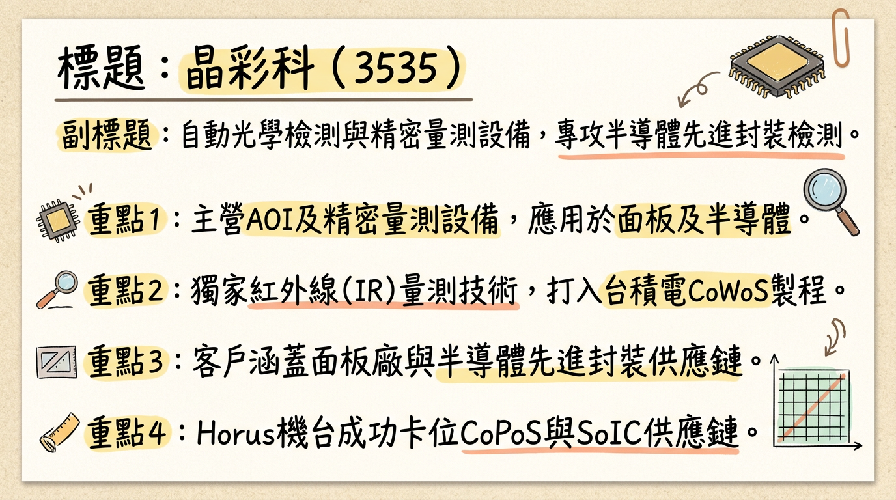
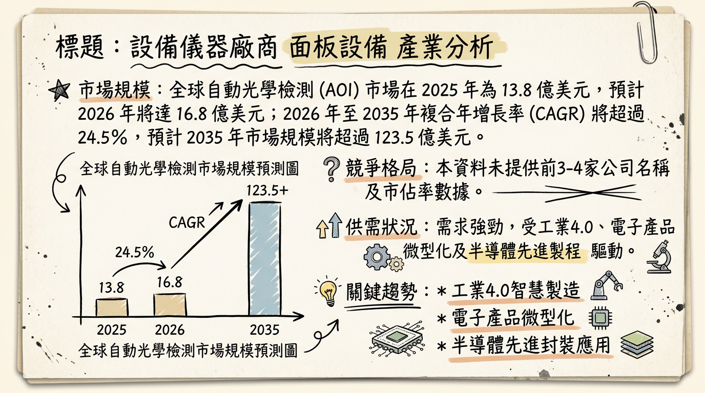
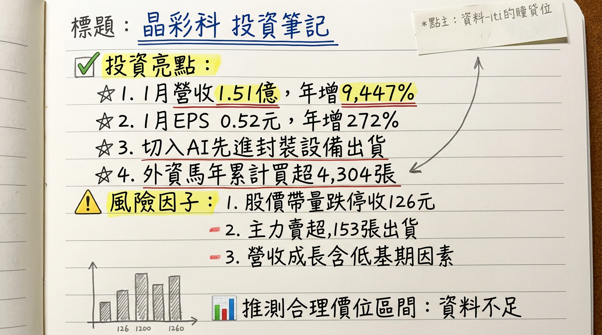

3535 晶彩科 深度研究報告
一句話摘要
晶彩科（3535）成功由面板檢測設備轉型至半導體先進封裝與AI晶片量測領域，其獨家紅外線（IR）技術已成功切入台積電CoWoS-L Gen2與CoPoS等高階製程供應鏈。在2026年1月營收跳增9,477.22%的強勁表現下，預期第二季起半導體設備將進入密集出貨階段，並在高毛利產品組合優化下，有望帶動公司營運於2026年由虧轉盈，迎來爆發性成長與結構性質變。
公司概覽
晶彩科主要從事「自動光學檢測」（AOI）及精密量測設備的研發、製造與銷售，並提供設備零組件及維修服務。過去專注於TFT-LCD面板檢測，是台灣唯一成功打入面板廠陣列段AOI設備的供應商。近年來，公司積極將機器視覺技術拓展至半導體先進封裝、Micro LED/Micro OLED、PCB等高成長新興領域。
核心產品與技術：
- FOPLP Die Location量測機：用於扇出型面板級封裝（FOPLP）的晶粒定位量測。
- FOPLP RDL細線路AOI檢測設備：可檢測2微米級線路。
- AOI量測對位設備：已打入先進封裝供應鏈。
- Horus系列機台：整合AI檢測與自動化量測功能，成功卡位最新的CoPoS與SoIC供應鏈。
- 獨家紅外線（IR）量測技術：能穿透矽載板等遮蔽介質，精準捕捉內部元件與孔位間的微米級位移，已成功打入台積電CoWoS-L Gen2製程。
營收結構預期：
| 業務類別 | 2021年上半年營收佔比 | 2025年目標營收佔比 | 2026年展望 |
|---|
| 顯示器相關設備 | 約80% | 50% | 比重持續下降，營收結構質變 |
| 半導體/PCB/先進封裝等 | 約20% | 50% | 比重顯著提升，毛利率改善 |
核心競爭優勢
獨家紅外線量測技術： 晶彩科獨有的紅外線（IR）量測技術，能有效穿透不透明材料（如矽載板），精準量測內部結構的微米級位移，此技術已獲台積電CoWoS-L Gen2製程驗證，並納入CoPoS首波供應鏈，具有高度技術壁壘與獨占性。
成功轉型與卡位先進製程： 公司從傳統面板檢測成功轉型，將機器視覺技術應用於半導體先進封裝（FOPLP, CoPoS, SoIC），並以Horus系列機台切入高階封裝供應鏈，精準把握AI晶片發展帶來的檢測需求。
高精度微米級檢測能力： FOPLP RDL細線路AOI檢測設備可檢測2微米級線路，滿足先進封裝對超精細線路的高精度檢測要求。
AI整合與自動化： Horus系列機台整合AI檢測與自動化量測功能，提升檢測效率與準確性，符合產業智能化趨勢。
台灣面板AOI領先地位： 曾是台灣唯一成功打入面板廠陣列段AOI設備的供應商，顯示其在光學檢測領域的深厚技術基礎和客戶信任度。
財務分析
月營收趨勢
| 月份 | 金額（新台幣百萬元） | 月增率 MoM | 年增率 YoY |
|---|
| 2026年1月 | 151.00 | 79.83% | 9447.00% |
| 2025年12月 | 84.41 | -28.51% | 959.75% |
| 2025年11月 | 118.00 | 173.67% | 82.58% |
| 2025年10月 | 43.14 | -49.71% | 2519.43% |
| 2025年9月 | 85.78 | 329.15% | 4028.15% |
| 2025年8月 | 19.99 | 342.23% | -49.32% |
季度數據 (截至2025年第三季)
- 2025年第三季EPS：-0.06元
- 2025年第三季毛利率：46.91%
- 2025年第三季營業利益率：-14.15%
- 2025年第三季季營收：未找到明確的2025年第三季營收總額數據。
年度趨勢
- 2024年實際營收：新台幣6.68億元
- 2024年實際EPS：0.69元
- 2025年全年營收：新台幣4.60億元 (累計至12月)
- 2025年全年EPS：累積至2025年第三季為-1.74元；2025年12月單月獲利0.14億元，每股盈餘0.18元，全年最終EPS預計於2026年3月6日公布。
法說會重點
- 最近一次法說會日期： 2025年7月25日 (已超過6個月，資訊可能過時)。
- 管理層發言與Guidance：
* 公司正積極轉型非顯示器事業，投入Micro LED和先進封裝等新興領域。Micro LED市場預期顯著成長，晶彩科已與重要客戶建立合作關係。
* 先進封裝市場呈現穩定成長趨勢，晶彩科已推出相應的量測工具。
* 管理層預期2026年公司營運有望由虧轉盈，並預計自2026年第2季起將開始放量出貨，後續業績可望逐季成長。
* 晶彩科獨家紅外線量測技術已成功打入台積電第2代CoWoS-L供應鏈，並入列CoPoS首波供應鏈，預計2026年第2季起開始放量出貨，需求動能有望延續至2027年。
* FOPLP Die Location量測機已打入封測大廠。
* HORUS系列機台已於2025年底拿到關鍵客戶訂單，並在第四季開始正式出貨，標誌公司正式切入半導體供應鏈。
* 券商報告預估，2026年晶彩科的設備預計出貨68~80台，年增率高達566%。
- 產能利用率、資本支出金額： 未找到2025-2026年的最新資料。
券商觀點
| 券商名稱 | 目標價 (新台幣) | 評等 | 報告更新日期 |
|---|
| 金玉峰證券投資顧問股份有限公司 | 113元 | 買進 | 2026年1月29日 |
* 金玉峰證券投資顧問股份有限公司 (富果直送) 預估2026年EPS達5.65元。
- 近期評等調升/調降： 未找到2025-2026年的最新資料。
財報深度分析
利潤率趨勢
| 季度 | 毛利率 | 營業利益率 | 稅後淨利率 |
|---|
| 2025年第三季 | 46.91% | -14.15% | -3.89% |
* 2025年第三季毛利率達46.91%，顯示公司產品具一定競爭力。然而，因營收規模較小及費用支出影響，仍處於營業虧損狀態。
* 隨著晶彩科成功轉型至高毛利的半導體先進封裝檢測機台，其產品組合將顯著優化。先進封裝AOI設備的單價和毛利明顯高於傳統面板設備，一台機台的營收貢獻能抵過過去多台機台。
* 預期自2026年第二季半導體設備開始密集出貨後，營收規模將放大，高毛利產品比重增加，有助於毛利率重回成長軌道，並帶動營業利益率轉正，實現營運由虧轉盈。
存貨與營運
- 近4季存貨金額與存貨週轉天數趨勢：未找到2024-2026年的最新資料。
- 應收帳款週轉天數趨勢：未找到2024-2026年的最新資料。
- 存貨異常堆積或備料現象：未找到2024-2026年的最新資料。然而，2026年1月營收的爆發性成長主要歸因於設備銷售與驗收時程集中，顯示在手訂單能有效轉化為營收。
資本支出
- 近3年資本支出金額與趨勢：未找到2024-2026年的最新資料。
- 未來資本支出計畫與預計新增產能：未找到2025-2026年的最新資料。儘管無明確資本支出計畫，但與日商羅自、平田機工在自動化領域深化合作，並預期2027年提供給日商的機械手臂與晶圓搬運系統量能將較2026年顯著成長，暗示了產能擴充或技術整合的動向。
其他財報重點
- 負債比率與淨負債/EBITDA：未找到2024-2026年的最新資料。
- 自由現金流量趨勢：未找到2024-2026年的最新資料。
- 業外收支重大項目：2026年1月單月稅後純益4,122萬元，每股稅後純益0.52元，主要來自設備銷售的本業營收認列。
股權異動
- 近期董監事/大股東申報轉讓紀錄：未找到2025-2026年的最新資料。
- 庫藏股買回紀錄（張數、區間、目的）：未找到2025-2026年的最新資料。
- 是否有發行可轉換公司債（CB）及轉換價格：未找到2025-2026年的最新資料。
- 近期是否有現金增資或減資計畫：未找到2025-2026年的最新資料。
- 股利政策（現金股利、股票股利歷史）：未找到2024-2025年的最新股利政策或發放記錄。
產業分析
市場規模與CAGR成長率
晶彩科所處的AOI及精密量測設備市場，受惠於工業4.0、電子產品微型化、半導體先進製程以及AI驅動的需求，呈現高速成長。
* 2025年全球AOI市場規模為
13.8億美元，預計2026年將達
16.8億美元。
* 2026年至2035年CAGR將超過24.5%，到2035年市場規模有望超過123.5億美元。
* 晶圓AOI系統市場在2025年達2.76億美元，預計2026年至2032年CAGR為6.9%，到2032年達4.37億美元。
* 預計從2025年的
98.9億美元增長到2026年的
106.1億美元，CAGR為
7.3%。
* 半導體檢測系統市場在2025年超過72.4億美元，預計2026年達77.7億美元，並在2026年至2035年期間以超過8.1%的CAGR增長，到2035年達157.8億美元。
* 全球市場銷售額在2025年達
0.32億美元，預計2026年至2032年CAGR為
8.3%，到2032年達
0.55億美元。
* 市場規模在2025年為
14億美元，預計到2026年達
24億美元。
* 在2026年至2038年預測期內，CAGR將達64.1%，到2038年底達9,379億美元。
* 預計從2025年的
44.3億美元增長到2026年的
49.1億美元，CAGR為
10.8%。
供需狀況
半導體設備市場，特別是與AI和先進封裝相關的檢測與量測設備，目前呈現供不應求的狀況。
- 2026年全球半導體設備產業正式進入由AI驅動的超級成長週期，晶圓廠設備 (WFE) 市場規模將突破1300億美元大關。
- 多數半導體設備廠商指出，市場成長的最大限制因素已非需求端，而是客戶無塵室空間的建置進度。
- 台積電CoWoS產能衝12.5萬片翻倍，並預計2026年半導體設備產業將迎超級循環年。
- 2026年3奈米以下先進製程產能將成長逾4成，先進製程產能持續供不應求。
產業平均毛利率水準
檢測設備行業的毛利率普遍較高，高階半導體檢測設備的毛利動輒6成以上，有些甚至被形容「比台積電還好賺」。此高毛利特性有利於晶彩科轉型後的獲利能力提升。
競爭格局
全球主要競爭者 (未找到明確市佔率數據，列出主要參與者)
| 公司名稱 | 領域 | 備註 |
|---|
| KLA Corporation | 半導體檢測設備 | 半導體檢測設備龍頭廠商。 |
| Applied Materials | 半導體設備 | 全球領先的半導體設備供應商之一。 |
| Tokyo Electron (TEL) | 半導體設備 | 全球領先的半導體設備供應商之一。 |
| ASML | 半導體設備 (曝光機,計量) | 在半導體設備領域扮演關鍵角色，其計量與檢測設備受管制。 |
| Koh Young | 自動光學檢測 (AOI) | SMT、半導體封裝AOI主要參與者。 |
| Camtek | 自動光學檢測 (AOI) | 專注於半導體前段、中段AOI設備。 |
| Saki Corporation | 自動光學檢測 (AOI) | SMT領域的AOI領導者。 |
| Nordson Corporation | 自動光學檢測 (AOI) | 多元化檢測設備供應商。 |
晶彩科 vs. 台灣同業比較
| 項目 | 晶彩科 (3535) | 牧德 (3563) | 倍利科 (7822) |
|---|
| 主要業務 | AOI/精密量測，顯示器轉型半導體先進封裝、Micro LED、PCB | PCB/載板AOI、半導體先進封裝AOI | 以AI演算法為核心的高階半導體光學檢測與量測設備 |
| 核心技術 | 獨家紅外線 (IR) 量測，FOPLP、CoPoS、SoIC 檢測 | AI檢測技術應用於先進封裝，3D量測能力 | AI深度學習演算法，20億張缺陷影像資料，軟硬體整合 |
| 客戶群體 | 面板廠，台積電CoWoS-L Gen2/CoPoS供應鏈，封測大廠 | 半導體先進封裝客戶，PCB/載板客戶 | 台積電先進製程供應鏈，國內外半導體廠，市占率約8成 |
| 2025年營收 | 4.60億元 (累計至12月) | 大成長108% (預估) | 20.75億元，年增187.82% |
| 2025年EPS | -1.74元 (累計至Q3) | 獲利大躍進 (預估) | 獲利大躍進 (預估) |
| 毛利率 | 2025Q3 46.91%，預期轉型後將提升 | 未找到最新具體資料 | 預計2026年與2025年持平 (高於平均) |
| 相對優勢 | IR技術獨占性，成功切入台積電CoWoS/CoPoS高階製程 | PCB/載板基礎穩固，AI先進封裝快速成長 | 深度嵌入半導體大廠，AI演算法壁壘高，獲利能力強勁 |
產業趨勢
關鍵技術趨勢與具體影響
AI與深度學習在檢測中的應用：
* 具體影響： AI驅動的檢測系統能更精準辨識極微小缺陷，降低「過殺」與「漏檢」問題，顯著提升良率與製程效率。隨著半導體製程進入3奈米及2奈米，即時3D GAA結構的量檢測需求對AI檢測至關重要。晶彩科的AI OM技術直接受益於此趨勢，提升其產品競爭力。
先進封裝技術的快速發展：
* 具體影響： AI與高效能晶片需求強勁推升2.5D/3D異質整合、CoWoS、SoIC、FOPLP、CoPoS等先進封裝技術加速落地。這使得AOI與Metrology的重要性大幅提升，檢測及量測產業正出現結構性成長期。高階封裝對檢測精度要求極高，晶彩科在FOPLP、CoPoS、SoIC的布局迎合了這一趨勢。
面板級封裝 (FOPLP) 的興起：
* 具體影響： 相較於晶圓級封裝，FOPLP的AOI掃描面積大五倍，需要更高速相機與大視野鏡頭，且面板級翹曲問題顯著，對AOI的掃描速度與精度要求更高。FOPLP已進入量產，CoPoS也將於2026年量產，帶動相關設備的更新潮，晶彩科的FOPLP Die Location量測機及RDL細線路AOI檢測設備處於有利位置。
對晶彩科的具體機會和威脅
*
轉型契機： 成功從LCD轉型至半導體先進封裝、Micro LED/OLED等高成長領域。
* 核心技術優勢： 紅外線(IR)量測技術、FOPLP檢測、Horus機台等在新興市場具獨特競爭力。
* AI應用深化： AI OM技術符合產業AI化趨勢，提升檢測效能。
* 產業超級循環： 半導體產業進入AI驅動的成長週期，先進封裝需求為晶彩科提供龐大市場機會。
*
激烈競爭： 面臨KLA、Applied Materials等國際大廠及台灣同業（牧德、倍利科）的激烈競爭。
* 技術快速迭代： 半導體製程與封裝技術發展迅速，需持續高額研發投入。
* 人才與供應鏈挑戰： 無塵室建置、基板短缺、人才匱乏可能影響設備交期。
* 股價修正壓力： 短期股價漲幅過大，可能面臨獲利了結賣壓。
相關投資題材的具體連結
- AI (人工智慧)： AI晶片對檢測精度要求極高，使AOI檢測從「選配」變為「標配剛需」。AI與HPC晶片是推動先進封裝發展的關鍵，晶彩科的AI OM技術直接受益。
- HBM (高頻寬記憶體)： HBM堆疊與封裝等關鍵節點需精密檢測。先進封裝市場受惠於異質整合對AI處理器至關重要，HBM整合是重要環節，晶彩科在先進封裝檢測的佈局與HBM題材高度相關。
- 先進封裝： 晶彩科的核心業務轉向之一，其FOPLP、CoPoS、SoIC等產品直接服務此市場。台積電CoWoS產能吃緊，OSAT業者成為AI封測需求擴張的第二波動能，晶彩科作為設備供應商直接受惠。
- Micro LED / Micro OLED： 晶彩科將機器視覺技術應用於Micro LED/Micro OLED檢測解決方案，直接受惠於此市場在穿戴、車用、高階顯示器等領域的快速成長。
近期催化劑
利多事件清單
- 2026年3月4日： 晶彩科元月單月獲利0.41億元，月增182.52%、年增272%，每股盈餘0.52元，月增188.88%、年增272%。外資連續五天買超力挺，累計買超4304張。
- 2026年3月3日： 公布1月合併營收達1.51億元，年增率高達9,447%，創19個月新高。單月稅後純益4,122萬元，每股稅後純益0.52元。
- 2026年2月25日： 股價受惠AI先進封裝題材發酵攻上漲停116元。紅外線偵測技術通過晶圓大廠製程驗證，題材與基本面同步加溫。
- 2026年2月9日： 公告1月合併營收1.52億元，月增79.84%，較去年同期大增9,477.22%，寫下近19個月以來新高。
- 2026年2月5日： 股價強勢突破百元大關，AI先進封裝題材發酵，外資回補助攻。
- 2026年2月2日： 獨家紅外線（IR）量測技術成功打入台積電CoWoS-L Gen2製程，並入列首波CoPoS供應鏈。預計第2季起密集出貨，需求動能延續至2027年。
- 2026年1月21日： 2025年12月單月獲利0.14億元，年增155%，每股盈餘0.18元，年增155%，成功單月轉盈。
- 2025年12月13日： 2025年11月營收1.18億元，月增173.67%，年增82.58%。
- 近期： 成功由面板檢測轉向半導體先進封裝領域，AI自動光學檢測設備(AOI)已切入半導體大廠CoWoS及CoPoS等高階封裝製程，去年下半年虧損已見收斂。
利空事件清單
- 2026年3月3日： 股價在經歷連六日大漲後，湧現獲利了結賣壓，終場帶量跌停收在126元。主力籌碼出現顯著賣壓，當日賣超1,153張。
- 2025年上半年： 營收表現疲軟，第二季營收降至5,304萬元，年減87.2%，為歷年低點。前五月合併營收為7,597.9萬元，年減64.1%。
⭐ 成長動能時間軸
| 時間點 | 成長動能 | 具體內容 |
|---|
| 2025年第四季 | 新客戶/新市場切入 | HORUS系列AOI機台獲得重要客戶下單，正式切入半導體供應鏈。 |
| 2026年第二季起 | 新客戶/新市場/需求爆發 | 獨家紅外線偵測技術已通過晶圓龍頭CoWoS-L Gen2製程驗證，並入列CoPoS首波供應鏈，預計開始密集出貨，需求動能一路延續至2027年，並已全面導入台積電包含AP3、AP5、AP8及美國廠等全球產線。CoPoS預計於2026年進入試產階段。 |
| 22026年 | 新客戶/新市場/產能提升 | Horus系列機台成功卡位最新的CoPoS與SoIC供應鏈，出貨動能將更強勁。FOPLP Die Location量測機台已獲封測大廠採用。與日商羅自（RORZE）、平田機工（Hirata）深化自動化領域合作。券商預估設備出貨68~80台，年增566%。 |
| 2025-2030年 | 需求面：AI晶片先進封裝需求 | 下游AI晶片先進封裝需求爆發，CoWoS-L與CoPoS已確立為未來AI晶片封裝主流，其中2.5D/3D封裝市場的複合年均成長率（CAGR）更高達17%。 |
| 2026-2038年 | 需求面：Micro LED市場成長 | Micro LED市場預計複合年增長率（CAGR）將達到64.1%，到2038年底將達到9,379億美元，帶動相關檢測設備需求。 |
| 長期 | 需求面：高階晶片製程複雜化 | 高階晶片製程日益複雜、單顆晶片成本高昂，對AOI自動光學檢測的依賴日漸提高。 |
| 未來未定時程 | 新應用拓展 | 切入AI伺服器液冷管接件加工測試等新應用。陸續投入扇出型晶圓級封裝（FOWLP）、2.5D/3D IC封裝等新興市場的檢測解決方案。 |
2026 展望
成長動能：
晶彩科2026年展望極為樂觀，主要受益於成功轉型至高毛利的半導體先進封裝檢測領域。其獨家紅外線（IR）量測技術成功打入台積電CoWoS-L Gen2及CoPoS供應鏈，確保了未來兩年的關鍵訂單與出貨動能。隨著2026年第二季起設備密集出貨，預期營收將呈現逐季成長，全年營收結構將顯著質變，高毛利的半導體機台出貨比重增加，有助於毛利率重回成長軌道，驅動公司由虧轉盈，並有望挑戰歷史新高EPS（法人預估2026年EPS達5.65元）。AI晶片與HBM需求爆發，以及2.5D/3D先進封裝的CAGR高達17%，為晶彩科提供了強勁的產業順風。
風險：
儘管成長動能強勁，但仍需留意以下風險：
營收認列不穩定： 設備銷售與驗收時程集中導致營收波動大。
客戶集中度高： 新訂單高度依賴台積電等少數大客戶，若客戶資本支出或時程延後將產生衝擊。
技術迭代與競爭： 半導體技術快速發展，需持續投入研發以維持競爭力，同時面臨國際大廠與台灣同業的激烈競爭。
股價修正壓力： 近期股價已因利多而大幅上漲，存在短線獲利了結賣壓與技術面修正風險。
總體經濟與產業循環： 全球經濟不確定性及半導體產業循環可能影響整體需求。
投資結論
轉型成功，卡位高成長領域： 晶彩科成功從傳統面板檢測設備製造商轉型為AI晶片先進封裝檢測設備供應商，精準把握半導體異質整合與AI晶片爆發性成長的產業趨勢，為公司長期成長奠定堅實基礎。
獨家技術獲龍頭驗證，具高度壁壘： 其獨特的紅外線（IR）量測技術成功打入台積電CoWoS-L Gen2及CoPoS供應鏈，證明其技術實力與市場稀缺性，形成強大競爭優勢與訂單能見度。
2026年營運迎來爆發點，由虧轉盈可期： 2026年1月營收高達1.51億元，年增9,447.22%，已展現強勁的營收動能。隨著第二季起先進封裝設備將密集出貨，加上高毛利產品比重提升，公司有望在2026年實現獲利由虧轉盈，法人預估2026年EPS可達5.65元。
產業趨勢強勁，長期動能無虞： 受益於AI、HBM、先進封裝（2.5D/3D CAGR 17%）及Micro LED（CAGR 64.1%）等題材，檢測設備需求持續旺盛，晶彩科作為關鍵設備供應商，長期成長動能無虞。
目標價區間建議： 考量晶彩科在半導體先進封裝檢測領域的獨家技術優勢與2026年預期EPS 5.65元，以及券商給出的目標價113元（隱含約20倍2026年預估本益比），我們認為其具有高成長潛力，若市場給予20-25倍本益比，建議目標價區間為 113元 – 141元。
本報告由 AI 自動產生，資料來源為公開網路資訊，僅供參考，不構成投資建議。產生時間：2026-03-06 00:20
📊 資訊卡


